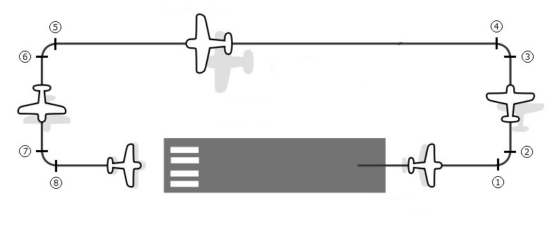

The Circuit Tab allows you to configure a rectangular 8-gate flight circuit scenario tailored to the performance profile of your active aircraft. The scenario commences on the runway threshold and requires you to take off, fly through all eight spatial gates in numerical sequence, land back at the airfield within a 2 km trigger radius, and bring the aircraft to a complete stop to complete the scenario.

The generated circuit is a standard left-handed rectangular pattern defined by four pairs of gates marking the start and entry/exit of each 90-degree turn:
Gate altitudes are managed through three explicit user inputs:
Calculated Heights: The heights for intermediate turn gates are automatically interpolated by the program:
The controls inside the Circuit Parameters group box allow you to fine-tune leg lengths, target altitudes, speed, and turn characteristics.
Defines the distance (in nautical miles) from the runway threshold to the start of the crosswind turn (Gate 1). Accepts non-negative decimal values.
Defines the straight-line distance (in nautical miles) for both the Crosswind (Gates 2–3) and Base (Gates 6–7) legs. Because the circuit is symmetrical, this single parameter controls both perpendicular legs to maintain a parallel downwind track. (Note: The total lateral offset of the downwind leg from the runway centerline equals this distance plus two turn radii).
Defines the distance (in nautical miles) from the final turn (Gate 8) back to the landing runway threshold.
Target altitude in feet AGL at the first gate on upwind leg.
Target cruise altitude in feet AGL for the downwind leg gates (Gates 3, 4, 5, and 6).
Target altitude in feet AGL at Gate 8 prior to short final.
The planned circuit target airspeed in knots. This value directly scales turn radius calculations across all four turn pairs.
The time required (in minutes) to complete a standard 360-degree turn. The default value of 2.0 corresponds to a standard Rate 1 turn (2 minutes for 360 degrees, or 3 degrees per second).
When an aircraft variant is selected on the General Tab, the application automatically matches the aircraft's rated cruise speed against built-in performance profiles to set optimal default circuit parameters:
Recalculating Defaults: Click Reset Tab at any time to recalculate and restore baseline parameters for the active aircraft.
Landing Trigger Zone: To ensure reliable goal resolution upon completing the circuit, the scenario defines a 2 km (2,000 m) spherical landing area centered on the destination airfield coordinates. Touchdown and coming to a complete stop anywhere within this 2 km zone will trigger scenario success.
Terrain Advisory: When picking a random runway or flying in mountainous areas, spatial placement of circuit gates relies strictly on runway orientation and calculated offsets. In hilly or mountainous terrain, generated gates may occasionally intersect elevated ground or be embedded within landforms.
Located at the bottom of the application interface, these controls execute actions for the active circuit configuration:
.fxml and .xml) to your output directory.
ui_settings.json, discarding any unsaved manual edits made on the tab without recalculating baseline defaults.